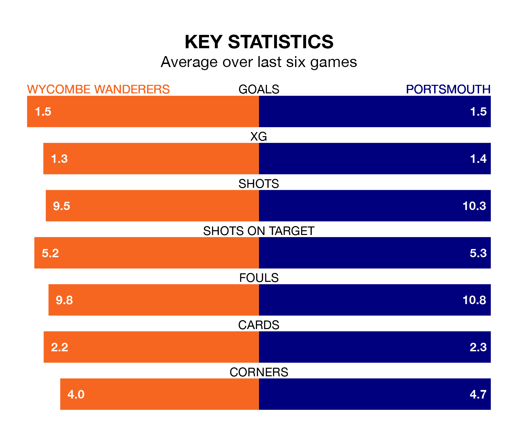

Wycombe Wanderers host Portsmouth at Adams Park on Friday on the back of three consecutive wins in EFL League One.
Wycombe have picked up 12 points from their last six games, and they face a Pompey side who have also won their last two matches, and collected 14 points from the last possible 18.
Portsmouth are top of the table after 39 games, of which they have won 24 and drawn 11, earning 83 points.
Wycombe are 11 places behind Pompey in 12th, with 13 wins and 11 draws putting them on 50 points.
With Will Norris between the sticks, the away side can rely on one of the league's safest pair of hands. He has kept 18 clean sheets in his 39 appearances this season, and no 'keeper has prevented the opposition scoring more often in EFL League One.
In Wanderers' net, Maksymilian Stryjek has seven clean sheets in 33 games. He has conceded a goal every 86 minutes, 40% more often than the 121 minutes between goals for Norris.
With 63 goals in 39 games so far this season, Portsmouth are scoring more than average in the league with 1.6 goals per game. And they are conceding fewer than average, letting in 32 goals at a rate of 0.8 per game.
The Chairboys, meanwhile, are average scorers, with 1.3 goals per game. They have also conceded 1.3 goals per game.
In the last 10 years, Wycombe and Portsmouth have played each other on 14 occasions. Wycombe won four of them, Portsmouth six, and they drew four times.
On average, the Chairboys scored 1.3 goals and Pompey 1.5 in those matches.
Their last meeting was on October 3, when Portsmouth won 2-1 at home.
Wycombe's last match was on March 16, a 2-0 win against Northampton Town, with Matt Butcher getting the goals for the Chairboys.
Portsmouth beat Peterborough United 1-0 last time out, also on March 16, with Kusini Boja Yengi on the scoresheet.
Updated: 10:19 (UTC), 22/03/24